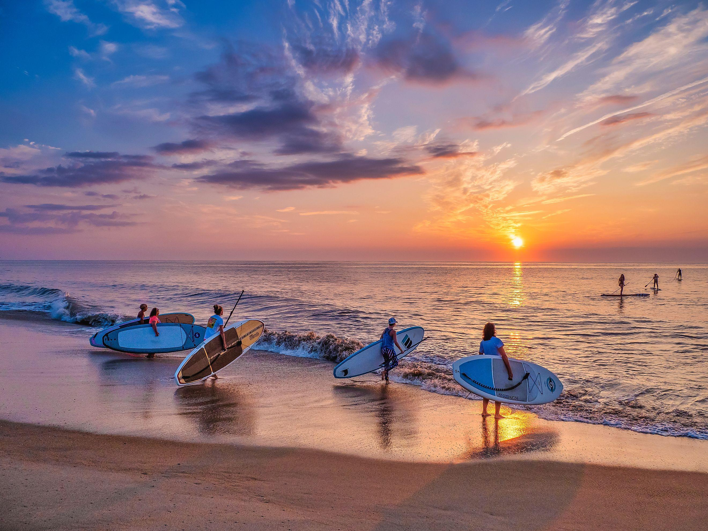

By 5:40 AM the jetty at Indian River Inlet already has six rods planted in sand spikes, tips bowed slightly toward the current, lines running out into water that's still more black than blue. Nobody's talking much. The regulars know each other by silhouette — the guy in the faded Phillies cap who's been coming out since April, the woman with the two coolers who never seems to leave without at least one keeper.
This is the quiet shift. The bridge traffic hasn't started yet. The bait shop up the road won't open for another twenty minutes. For about an hour and a half, the inlet belongs entirely to people who set an alarm on purpose.
Then, somewhere around 6:50, the light changes from gray to gold, and the handoff starts. A paddleboarder wades in near the calmer water on the bay side. Two more show up with boards under their arms, wetsuits half-zipped, coffee still in hand. By 7:15 there are more boards in the water than rods on the beach, and by 7:30 most of the surfcasters have already reeled in, packed the truck and headed home before the heat sets in.
For about ten minutes, though, both crowds are out there together — lines still in the water, boards drifting past the jetty rocks, everybody polite about staying out of each other's space. Nobody photographs it because it doesn't look like much. But it's one of the only times all day that the inlet holds two completely different versions of a Delaware beach morning at once, and neither one seems to mind sharing.
By 8 AM it's a normal beach day again — families setting up chairs, the bait shop finally open, the bridge humming with cars. The six o'clock shift is over until tomorrow, when it starts all over again, the same quiet handoff, mostly unwatched.